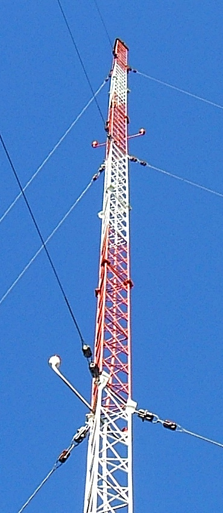

Wind-sensitive structures
Communication Towers & Telecom Structures
Direct structural design experience for major telecommunications vendors in Bangladesh.
Design Portfolio
Designed self-supporting tower superstructures in 12 m, 15 m, 25 m, 32 m, 42 m, 52 m, 60 m and 75 m configurations for GrameenPhone using BS 8100. Designed greenfield and rooftop tower foundations for Ericsson Bangladesh and Motorola Bangladesh, and a 10 m telescopic monopole for Huawei Bangladesh using EIA/TIA-222F.

Engineering Scope
Loading
Wind, antennas, microwave dishes, feeders, ladders, platforms, maintenance and erection loads.
Structural Design
Global stability, member sizing, slenderness, connections, serviceability, tilt, twist and appurtenance effects.
Durability & Safety
Galvanization, aviation lighting, lightning protection, grounding, access ladders and fall-protection systems.